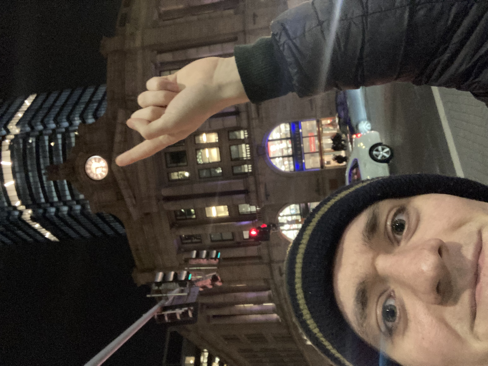
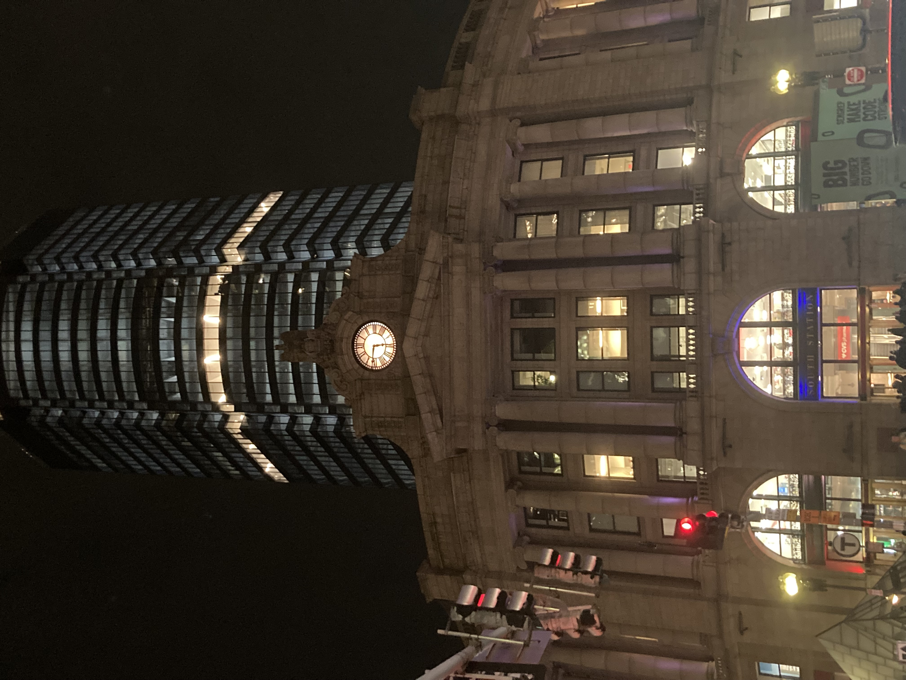
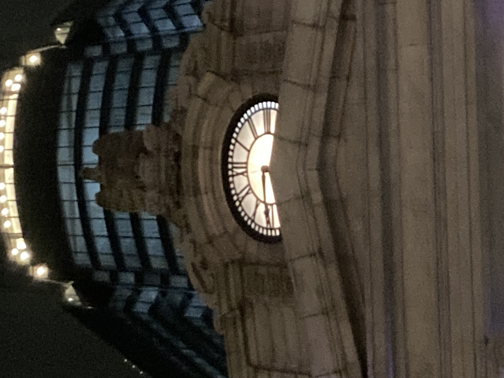
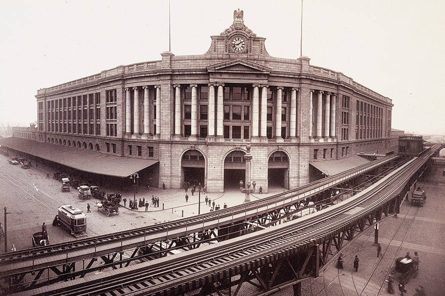
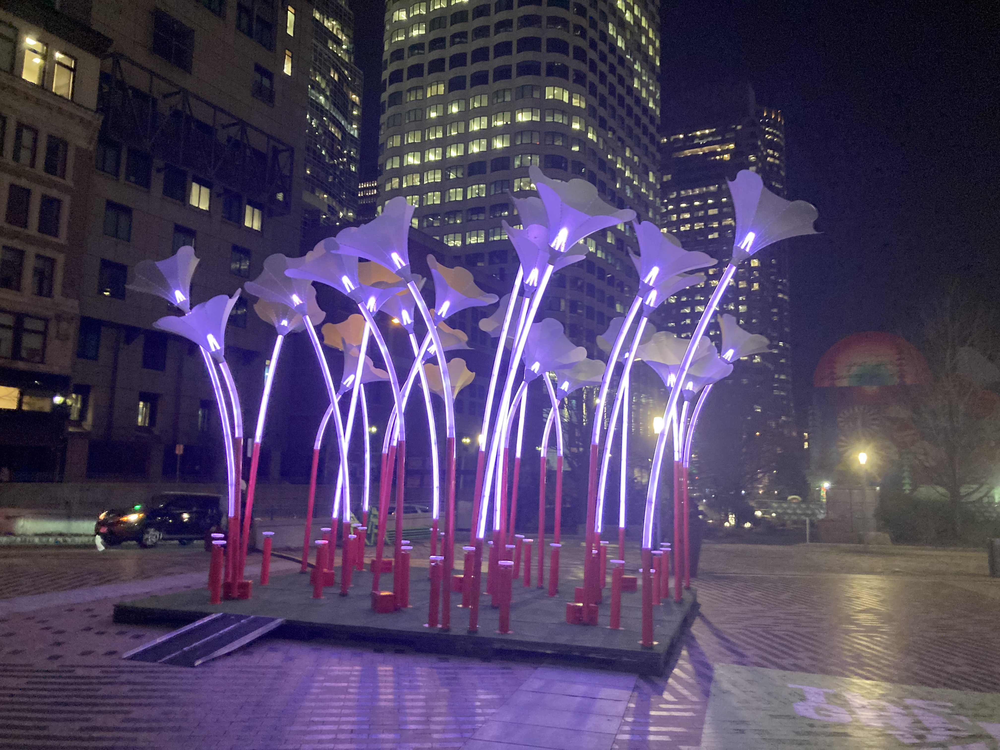

Andrew's Blog
Andrew's Blog



What better way to start my Boston flâneuring adventure than to start with one of the first buildings many people experience when arriving in the city, Boston's South Station.
Our January prompt was:
Go to a building that has some sort of grotesque/gargoyle/other animal depiction. Tell us about the building, any fun facts about the animals.
South Station has one of those! An eagle, perched atop the building's clock tower.


In my experience, most people coming and going through South Station don't look up. They're in a rush. It's a commuter hub, it's always busy, and if you're there it is usually a stop on the way to something else. But if you do look up (and ignore Boston's newest skyscraper) you will see something pretty cool! About one hundred feet above the ground rests a very unique clock.
Opening in 1899, the South Station clock tower is the largest operating hand-wound clock in New England. It requires a station employee to manually climb to the roof and wind it twice a week. Typically done on Tuesdays and Thursdays, South Station worker, Jamie Kelly, says it takes him about 20 minutes to do.

The tower, along with the rest of South Station, was designed by architecture firm Shepley, Rutan and Coolidge, a firm famous for many buildings including some in Stanford University, Harvard, and the Chicago Art Institute. Fitting that a group born in the Boston metro (Brookline MA) would design the iconic station for the city. The clock itself was then built by the local Edward Howard Clock Company. To the big clock admirers or Anglophiles of the audience, they may recognize that the clock face is modeled after Big Ben. The "gravity escapement" that powers the clock's time keeping is also similar to the one used over in London's time keeper.
Well Andrew, you might say, this clock stuff is great but isn't this prompt about animal statues? Yes it is, but unfortunately for me it was not until after I went on my little adventure that I realized there is remarkably little information available about the stone eagle. It is 8 feet wide and weighs about 8 tons. It was built alongside the clock. But I can't really find why they chose an eagle. It's New England, it should be a turkey. I can make some guesses though. This is America and the end of the country's busiest rail road corridor (the NEC) maybe deserves to be capped with some national iconography? It might also just be a popular thing to put on train stations. New York's Penn Station (opened about a decade later) famously had 22 stone eagle statues around the building.
So, my first month of flâneur club was fairly successful. I may not have learned too much about the specific featured creature, but I did learn a lot about an iconic Boston building and some local history. To me, one of the most exciting parts about flâneuring is experiencing where you live and being knowledgeable about what is going on. In that vein, the highlight of my flâneur adventure this month happened along the way to my destination. Boston is doing a winter public art exhibit they call Winteractive. While attempting to get a picture of the South Station eagle, I stumbled across one of the exhibits, "Trumpet Flowers" by Amigo & Amigo. Magical glowing flowers brought spectators together like moths to a light. People I have never spoken to and may never see again joined me in laughs and smiles as we played music on the art. It was a really great human experience that I would not have had if I wasn't seeking out my January flâneur club quest.
I am looking forward to next month and more surprises to come. I promise to try to take less blurry pictures next time too...

Subscribe to the RSS Feed to see more flâneur content!